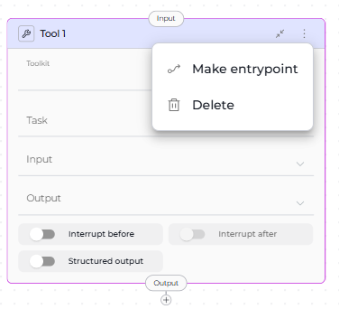

Node Connectors¶
Node connectors link nodes together to define your pipeline's execution flow. They determine which node runs next, how data flows between nodes, and when the pipeline completes.
Key Concepts:
- Entry Point - Where pipeline execution begins
- Transitions - Connections between nodes
- END Node - Where pipeline execution stops
- Connection Patterns - Common workflow structures
Essential Elements
Every pipeline requires: (1) Entry Point to start execution, (2) Transitions to connect nodes, (3) END to terminate execution
Entry Point Node¶
The Entry Point is the first node that executes when your pipeline runs. Every pipeline must have exactly one entry point.
Setting an Entry Point¶
Visual Method:
- Open your pipeline in Flow Editor
- Click the three-dots menu (⋮) on the node
- Select Make entrypoint

{kind=link}
Entry Point Rules
- Only one node can be the entry point
- Router and Condition nodes cannot be entry points (they require input from previous nodes)
- All other node types can serve as entry points
- Entry point must be set before running the pipeline
Changing Entry Points
Making a different node the entry point automatically removes the previous entry point designation.
See Also: Entry Point Guide for detailed configuration
END Node¶
The END node terminates pipeline execution. It's not a physical node but a special target for connections.
When to Use END¶
Use END as the connection target when:
- Pipeline has completed all work
- No further processing is needed
- You want to explicitly stop execution
How to Connect to END¶
Visual Method:
- Drag a connector from a node
- Release in the canvas
- Select END from the dropdown
YAML Method:
Complete Execution Paths
Every execution path must eventually reach END. Paths without termination may cause unexpected behavior.
{kind=link}
Node Input and Output Ports¶
All nodes have input and output ports for connectors:
| Port Type | Purpose | Visual Indicator |
|---|---|---|
| Input | Receives data/control from previous nodes | Top of node card |
| Output | Sends data/control to next nodes | Bottom of node card |
| Default Output | Fallback path (Router, Condition, Decision only) | Labeled separately |
Connection Rules by Node Type¶
Standard Nodes (Single Output)¶
Most nodes can have only ONE output connection:
- LLM
- Agent
- Function
- Tool
- Code
- Loop
- Loop from Tool
- State Modifier
- Pipeline (Subgraph)
- Decision
YAML Example:
Multi-Output Nodes¶
Three node types support multiple outputs:
1. Router Node¶
Routes execution based on conditional logic. Can have:
- Multiple conditional outputs: One for each defined route
- Default output: Fallback when no conditions match
YAML Example:
- id: Route Request
type: router
condition: "{{ request_type }}"
routes:
- when: "{{ request_type == 'urgent' }}"
transition: Priority Handler
- when: "{{ request_type == 'standard' }}"
transition: Standard Handler
default: Error Handler # Default output
2. Condition Node¶
Boolean evaluation with two outputs:
- True output: When condition evaluates to true
- False output: When condition evaluates to false
YAML Example:
- id: Check Approval
type: condition
condition: "{{ status == 'approved' }}"
transitions:
true: Publish Story
false: Request Changes
3. Decision Node¶
LLM-powered routing to multiple destinations.
YAML Example:
- id: Classify Intent
type: decision
description: "Analyze user intent and route appropriately"
decision:
nodes:
- Bug Report Handler
- Feature Request Handler
- Question Handler
Multiple Inputs¶
All nodes can accept multiple input connections, allowing:
- Convergence of different execution paths
- Merging results from parallel branches
- Reusing nodes in different contexts
Example:
- id: Generate Report
type: function
# Can receive input from multiple nodes
transition: Email Results
# Both paths lead to same node:
- id: Process Type A
transition: Generate Report
- id: Process Type B
transition: Generate Report
{kind=link}
YAML Connection Syntax¶
Basic Transition¶
Connect one node to another:
Example:
Conditional Transitions (Router)¶
Multiple routes with default fallback:
condition: "{{ variable }}"
routes:
- when: "{{ condition_1 }}"
transition: Node A
- when: "{{ condition_2 }}"
transition: Node B
default: Default Node # Optional fallback
Boolean Transitions (Condition)¶
True/false paths:
Decision-Based Transitions¶
LLM chooses from options:
Terminate Pipeline¶
Creating Connections Visually¶
ELITEA provides multiple ways to create connections in Flow mode:
Method 1: Drag from Node¶
- Click and drag the output port (bottom of node)
- Drag the connector line across the canvas
- Release on the input port (top of target node)
{kind=link}
Method 2: Dropdown Menu
- Drag connector from output port
- Release in empty canvas area
- Select from dropdown:
- Existing nodes - Connect to available node
- Create New Node - Add and connect new node
- END - Terminate pipeline
{kind=link}
Interrupt Options¶
Interrupt Before and Interrupt After are advanced options that pause pipeline execution for human review or intervention.
Interrupt Before¶
Pauses before a node runs. Useful for:
- Reviewing inputs before critical operations
- Confirming decisions before irreversible actions
- Manual data validation
YAML:
Visual: Toggle Interrupt Before in node's Advanced settings
{kind=link}
Interrupt After¶
Pauses execution after a node completes. Useful for:
- Reviewing outputs before proceeding
- Verifying LLM results
- Allowing human feedback
YAML Syntax:
Visual: Toggle Interrupt After in node's Advanced settings
Interrupt Limitations
- Only works in interactive mode (Chat interface)
- Programmatic/API executions may ignore interrupts
- Use sparingly to avoid breaking automated workflows
Connection Patterns¶
Linear Flow¶
Sequential execution through nodes.
entry_point: Step 1
nodes:
- id: Step 1
type: function
transition: Step 2
- id: Step 2
type: llm
transition: Step 3
- id: Step 3
type: function
transition: END
{kind=link}
Conditional Branching¶
Route based on true/false condition.
entry_point: Check Status
nodes:
- id: Check Status
type: condition
condition: "{{ approved }}"
transitions:
true: Publish
false: Request Changes
- id: Publish
type: function
transition: END
- id: Request Changes
type: llm
transition: END
Multi-Path Routing¶
Multiple branches based on complex logic.
entry_point: Classify Request
nodes:
- id: Classify Request
type: router
condition: "{{ request_type }}"
routes:
- Bug Handler
- Feature Handler
- Question Handler
default_output: General Handler
Converging Paths¶
Multiple branches merge into single node.
entry_point: Route Input
nodes:
- id: Route Input
type: decision
decision:
nodes:
- Process Type A
- Process Type B
- id: Process Type A
type: function
transition: Generate Report
- id: Process Type B
type: function
transition: Generate Report
- id: Generate Report
type: function
transition: END
Best Practices¶
Essential Rules¶
Required Elements
- Set Entry Point: Pipeline won't run without one
- All Paths to END: Every branch must terminate
- Avoid Infinite Loops: Ensure loops eventually reach END
Connection Guidelines¶
- Use Descriptive Names:
Validate User Inputinstead ofNode1 - Add Default Routes: Provide fallback for Router nodes
- Test Incrementally: Build and test step-by-step
- Limit Nesting: Keep pipeline structure clear and maintainable
Good Example:
entry_point: Validate User Input
nodes:
- id: Validate User Input
type: function
transition: Process Valid Data
- id: Process Valid Data
type: llm
transition: END
Bad Example:
# Missing entry_point
nodes:
- id: Node1
transition: Node2
- id: Node2
# Missing transition - pipeline hangs
Related¶
Related Documentation
- Entry Point Guide - Detailed entry point configuration
- State Management - Data flow between nodes
- Control Flow Nodes - Router, Condition, and Decision nodes
- Flow Editor - Visual pipeline design
- YAML Configuration - Complete YAML syntax reference